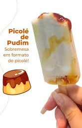

|

|
Modo de preparo:
- Bata o pudim com o leite no liquidificador,
até obter uma mistura lisa.
- Coloque a mistura em formas de picolé e leve ao freezer por duas horas, ou até ficar firme
- Depois de duas horas, faça furos no centro do picolé e recheie com calda de caramelo fria
- Você pode usar uma bisnaga de temperos ou um manga de confeiterio para rechear melhor.
- Coloque os palitos e retorne para o freezer para terminar de congelar
- Enquanto isso, faça a cobertura para os picolés:
- Derreta os chocolate branco no óleo de coco, em banho maria, até ele ficar totalmente derretido e bem liso.
- Deseforme os picolés depois de congelados.
- Mergulhe os picolés, um a um, no chocolate derretido e retorne ao freezer.
- Depois da casquinha de chocolate já pronta, é só aproveitar!
- Aproveite em todas as épocas do ano!
|